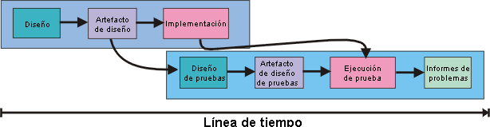
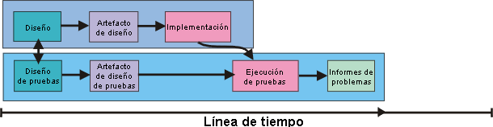
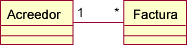
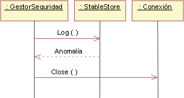

| Concepto: Diseño de primera prueba |
 |
|
| Elementos relacionados |
|---|
IntroducciónLos diseños de prueba se crean utilizando información de una variedad de productos de trabajo, incluidos los productos de trabajo de diseño como las realizaciones de guiones de uso, los modelos de diseño o las interfaces clasificadoras. Las pruebas se ejecutan después de crear los componentes. Es típico crear los diseños de prueba justo antes de que se vayan a ejecutar las pruebas, bastante después de que se hayan creado los productos de trabajo de diseño de software. En la figura 1, a continuación, se muestra un ejemplo. Aquí, el diseño de la prueba empieza en algún momento hacia el final de la implementación. Recurre a los resultados del diseño de componentes. La flecha que va desde Implementación hasta Ejecución de la prueba indica que las pruebas no se pueden ejecutar hasta que la implementación haya finalizado.  Figura 1: Tradicionalmente, el diseño de pruebas se realiza hacia el final ciclo vital. Sin embargo, no tiene por qué ser así. A pesar de que la ejecución de pruebas debe esperar a que se haya implementado el componente, el diseño de pruebas se puede realizar antes. Se puede hacer justo después de haber finalizado el producto de trabajo de diseño. También se puede realizar en paralelo con el diseño de componentes, como se muestra a continuación:  Figura 2: El diseño de la primera prueba sincroniza el diseño de pruebas con el diseño de software El desplazamiento del esfuerzo de prueba "en sentido ascendente" se conoce comúnmente como "diseño de primera prueba". ¿Qué ventajas tiene?
EjemplosA continuación se proporcionan algunos ejemplos para darle un primera impresión del diseño de primera prueba. Suponga que va a crear un sistema para reemplazar el antiguo método "pregúntale a la secretaria" para asignar salas de reuniones. Uno de los métodos de la clase Base de datos_Reunión se llama getMeeting, y tiene esta signatura: Meeting getMeeting(Persona, Tiempo); Dadas una persona y una hora, getMeeting devuelve la reunión planificada a la que debe asistir esa persona a esa hora. Si la persona no tiene planificada ninguna reunión, devuelve el objeto Meeting especial unscheduled. Hay varios guiones de prueba directos:
Estos guiones de prueba son muy sencillos, pero deben probarse en algún momento. También se pueden crear en este momento, escribiendo el código de prueba real que se ejecutará algún día. El código Java para la primera prueba puede tener un aspecto similar al siguiente:
// if not in a meeting at given time, // expect to be unscheduled. public void testWhenAvailable() { Person fred = new Person("fred"); Time now = Time.now(); MeetingDatabase db = new MeetingDatabase(); expect(db.getMeeting(fred, now) == Meeting.unscheduled); }
Pero hay ideas de prueba más interesantes. Por ejemplo, este método busca una coincidencia. Cuando un método realiza una búsqueda, es recomendable preguntarse qué ocurriría si encuentra más de una coincidencia. En este caso, debería preguntarse "¿Puede una persona estar en dos reuniones a la vez?" En un principio, parece imposible, pero si le pregunta a la secretaria sobre el caso, puede que le informe de algo sorprendente. Resulta que es bastante frecuente que algunos ejecutivos tengan planificadas dos reuniones al mismo tiempo. Su rol consiste en entrar en una reunión y "motivar a las tropas" durante un breve periodo de tiempo y, después, pasar a la siguiente reunión. Un sistema que no refleje este comportamiento terminaría por no utilizarse. Este es un ejemplo de diseño de primera prueba realizado en el nivel de implementación que detecta un problema de análisis. Debe tener en cuenta varias cosas al respecto:
El segundo de los tres ejemplos es un modelo de gráfico de estado para un sistema de calefacción.
Figura 3: Gráfico de estado de HVAC Un conjunto de pruebas cruzará todos los arcos del gráfico de estado. Una prueba puede empezar con un sistema desocupado, introducir un suceso Demasiado caliente, hacer que el sistema falle durante el estado Enfriando/En ejecución, eliminar el error, introducir otro suceso Demasiado caliente y, a continuación, devolver el sistema al estado Desocupado. Puesto que así no se ejercitan todos los arcos, es necesario realizar más pruebas. Estos tipos de pruebas buscan varios tipos de problemas de implementación. Por ejemplo, al cruzar todos los arcos, comprueban si la implementación se ha dejado alguno. Mediante la utilización de secuencias de sucesos que tienen vías de acceso de error seguidas de vías de acceso que deberían completarse satisfactoriamente, estas pruebas comprueban si el código de manejo de errores no elimina los resultados parciales que pueden afectar a los cálculos posteriores. (Para obtener más información sobre los gráficos de estado de pruebas, consulte el apartado Directriz de producto de trabajo: Ideas de prueba para gráficos de estado y diagramas de actividad.) El ejemplo final utiliza parte de un modelo de diseño. Existe una asociación entre un acreedor y una factura, donde cualquier acreedor puede tener más de una factura pendiente.  Figura 4: Asociación entre las clases Acreedor y Factura Las pruebas que se basan en este modelo deberían ejercitar el sistema cuando un acreedor no tiene facturas, sólo tiene una factura o tiene muchas facturas. Un verificador también preguntará si hay alguna situación en que sea necesario asociar una factura con más de un acreedor, o en que una factura no tenga acreedores. Es posible que las personas que actualmente ejecutan el sistema basado en papel que va a ser sustituido por el sistema informático utilizan facturas sin acreedor como forma de hacer un seguimiento del trabajo pendiente. Si es así, este problema debería detectarse en el análisis. ¿Quién realiza el diseño de la primera prueba?El diseño de primera prueba lo puede realizar el autor del diseño u otra persona. Es frecuente que lo haga el autor. La ventaja es que reduce los gastos generales de comunicación. El diseñador de pruebas y el diseñador de productos de trabajo no tienen por qué hablar entre sí. Además, un diseñador de pruebas separado debe invertir tiempo en conocer bien el diseño, mientras que el diseñador original ya lo conoce. Finalmente, muchas de estas preguntas, como "¿qué sucede si el compresor falla en estado X?", son preguntas naturales durante el diseño del producto de trabajo de software y el diseño de pruebas, por lo que puede hacer que la misma persona plantee la pregunta exactamente una vez y anote las respuestas en forma de pruebas. Sin embargo, también hay desventajas. La primera es que el diseñador del producto de trabajo es, hasta cierto punto, ciego ante sus errores. El proceso de diseño de la prueba revelará parte de estos errores omitidos, aunque probablemente no tantos como detectaría una persona diferente. Parece que la dimensión de este problema varía enormemente de una persona a otra y, a menudo, está relacionada con la experiencia del diseñador. Otra de las desventajas de que la misma persona se encargue del diseño de software y el diseño de pruebas es que no existe paralelismo. La asignación de roles para separar a las personas requerirá un esfuerzo total mayor, pero seguramente tendrá como resultado un tiempo de calendario inferior. Cuando las personas desean cambiar del diseño a la implementación, la inversión de tiempo en el diseño de pruebas puede ser frustrante. Y, lo que es más importante, existe una tendencia a escatimar el trabajo para poder avanzar. ¿Se pueden realizar todos los diseños de pruebas durante el diseño de componentes?No. El motivo es que no se toman todas las decisiones en el proceso de diseño. Las decisiones que se tomaron durante la implementación no se probarán adecuadamente con las pruebas creadas en el diseño. El ejemplo clásico es una rutina para clasificar matrices. Existen muchos algoritmos de clasificación diferentes con intercambios diferentes. Normalmente, el método de clasificación rápida (Quicksort) es más rápido que la clasificación por inserción en matrices grandes y más lento en matrices pequeñas. Así que se puede implementar un algoritmo de clasificación que utilice Quicksort para matrices con más de 15 elementos y la clasificación por inserción para el resto de las matrices. Esta división de trabajo puede ser invisible para los productos de trabajo de diseño. Podría representarla en un producto de trabajo de diseño, aunque es posible que el diseñador haya decidido que el beneficio de explicitar las decisiones no merece la pena. Dado que el tamaño de la matriz no es relevante para el diseño, el diseño de pruebas puede utilizar involuntariamente sólo matrices pequeñas, lo que significa que no se probará nada del código Quicksort. Considere, como otro ejemplo, esta fracción de un diagrama de secuencia. Muestra a un GestorSeguridad llamando al método log() de StableStore. Aunque en este caso, el método log() devuelve una anomalía, lo que provoca que el GestorSeguridad llame a Connection.close().  Figura 5: Instancia del diagrama de secuencia del gestor de seguridad Este es un buen recordatorio para el implementador. Siempre que log() falle, debe cerrarse la conexión. La pregunta que debe responder la prueba es si el implementador lo hizo realmente, y si lo hizo correctamente, en todos los casos o sólo en algunos. Para responder a esta pregunta, el diseñador de pruebas debe buscar todas las llamadas a StableStore.log() y asegurarse de que todos los puntos de llamada tienen una anomalía que manejar. Puede parecer extraño ejecutar este tipo de pruebas, puesto que se acaba de mirar todo el código que llama StableStore.log(). ¿No puede limitarse a comprobar si maneja las anomalías correctamente? Es posible que baste con una inspección; pero el código de manejo de errores es muy propenso a los errores, ya que a menudo depende implícitamente de presuposiciones de que se ha violado la existencia del error. El ejemplo clásico es el de código que maneja anomalías de asignación. A continuación se muestra un ejemplo:
Este código pretende recuperarse de errores de memoria insuficiente haciendo limpieza (y, de este modo, dejando memoria disponible) y, después, continuando con el proceso de sucesos. Supongamos que se trate de un diseño aceptable. emergencyRestart pone mucha atención en no asignar memoria. El problema es que emergencyRestart llama a alguna rutina de programa de utilidad, que llama a otra rutina de programa de utilidad, que llama a otra rutina de programa de utilidad, que asigna un objeto nuevo. Pero no hay memoria, así que el programa falla. Este tipo de problemas son difíciles de encontrar con una inspección. Diseño de primera prueba y fases de RUPHasta este punto, hemos presupuesto que realiza todo el diseño de pruebas posible y los antes posible. Es decir, que deriva todas las pruebas que puede del producto de trabajo de diseño y, después, sólo añade pruebas basadas en las cualidades esenciales de la implementación. Esto no es apropiado en la fase de elaboración, ya que puede que unas pruebas tan completas no estén alineadas con los objetivos de una iteración. Supongamos que se está construyendo el prototipo de arquitectura para demostrar la viabilidad del producto a los inversores. El prototipo puede basarse en unas cuantas instancias clave de guión de uso. Es necesario probar el código para asegurarse de que soporta estas instancias. Pero, ¿es perjudicial crear más pruebas? Por ejemplo, puede parecer obvio que el prototipo ignore casos de error importantes. ¿Por qué no documentar la necesidad del manejo de errores escribiendo guiones de prueba que lo ejerciten? Pero, ¿y si el prototipo hace su trabajo y revela que el enfoque arquitectónico no funcionará? Entonces, la arquitectura se desechará, junto con todas las pruebas de manejo de errores. En este caso, el esfuerzo de diseñar las pruebas no habrá producido ningún valor. Hubiera sido mejor esperar y diseñar únicamente las pruebas necesarias para verificar si este prototipo de prueba de concepto comprueba realmente el concepto. Puede que parezca un punto sin importancia, pero hay en juego efectos psicológicos importantes. La fase de elaboración consiste en tratar riesgos mayores. El equipo del proyecto en su conjunto debería centrarse en estos riesgos. Si las personas se concentran en temas sin importancia, se agota la concentración y la energía del equipo. ¿Cuándo se puede utilizar el diseño de primera prueba satisfactoriamente en la fase de elaboración? Este diseño puede desempeñar un papel importante en la exploración adecuada de los riesgos arquitectónicos. Si consideramos cómo sabrá un equipo, con precisión, si un riesgo se ha realizado o evitado, añadiremos claridad al proceso de diseño y, posiblemente, obtengamos una arquitectura mejor la primera vez que la construyamos. Durante la fase de construcción, los productos de trabajo de diseño se ponen en su formato final. Se implementan todas las realizaciones de guiones de uso necesarias, al igual que las interfaces de todas las clases. Puesto que el objetivo de la fase es la completitud, es apropiado completar el diseño de la primera prueba. Los sucesos posteriores deben invalidar pocas, o ninguna, prueba. La fases de inicio y transición suelen centrarse menos en actividades de diseño para las que son adecuadas las pruebas. Dado el caso, el diseño de primera prueba es aplicable. Por ejemplo, se podría utilizar con trabajo de prueba de concepto candidato en la fase inicial. Al igual que en las pruebas de las fases de construcción y elaboración, debería alinearse con los objetivos de iteración. |

© Copyright IBM Corp. 1987, 2006. Reservados todos los derechos. |